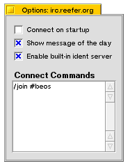

- Connect on startup
Any servers that have this option checked will automatically
start the connection process when Bowser is launched.
- Show message of the day
I actually can't think of a good reason to uncheck this, but mIRC offers
it as an option. If the option is unchecked, Bowser won't scroll the servers Message
of the Day on connect (seen when you type /motd).
- Enable built-in ident server
I'll try to keep this description from getting too technical, but unchecking this will keep Bowser from waiting for an Ident request from a server. Some servers may not care and just prepend your username with a tidle (~). Others might not let you on at all.
- Connect Commands
You can enter commands, one per line, which will be fired off when a connection to a server is
completed. Anything you would type into the input box in the server window
can be entered here. Useful for /join commands.
|
|